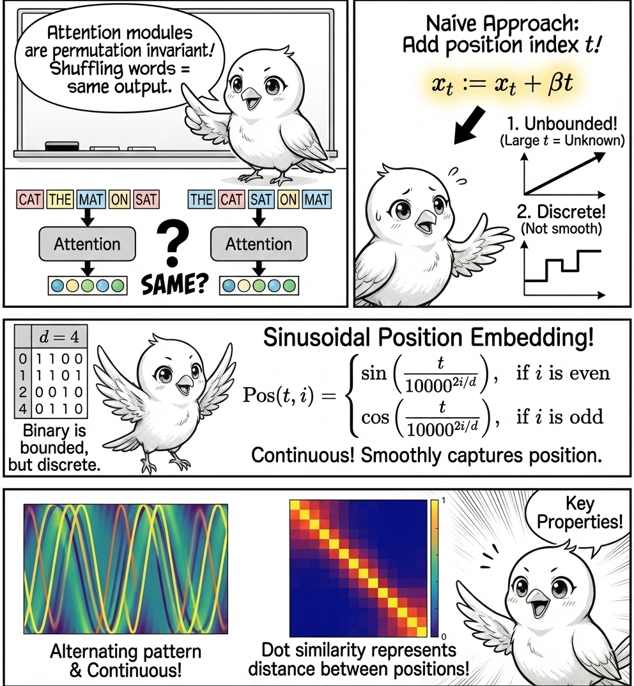
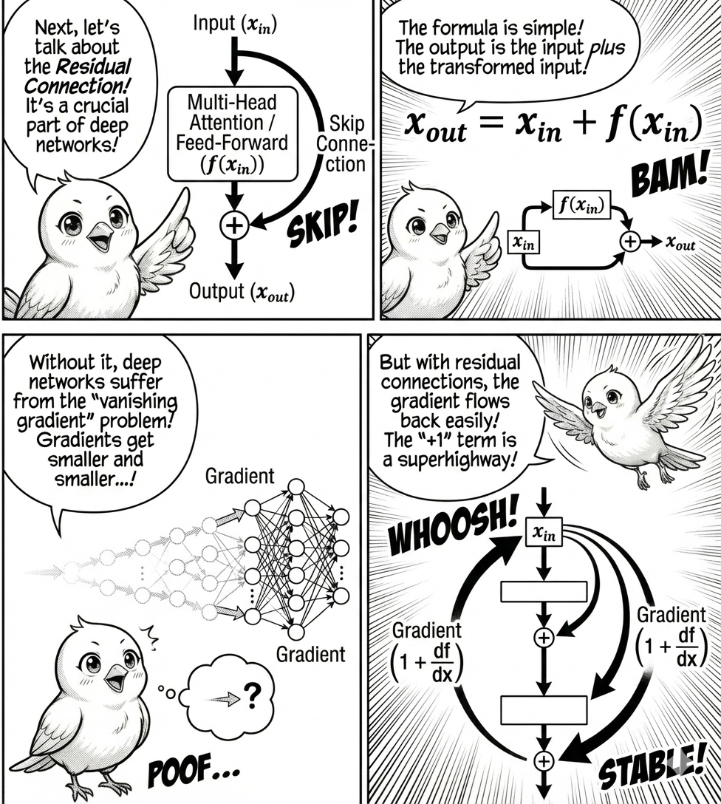
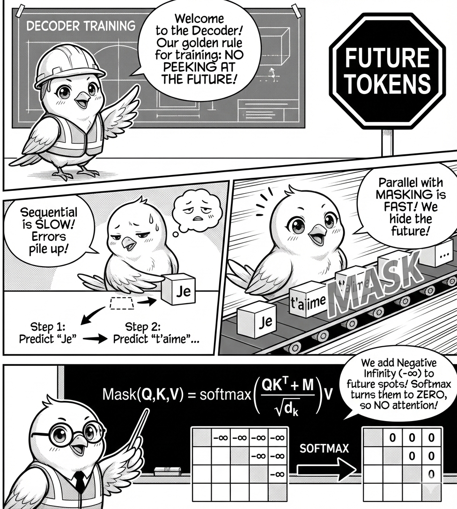

Transformers
What you’ll learn in this module
This module introduces the transformer architecture, the foundation of modern language models.
You’ll learn:
- Why static embeddings fail to capture context-dependent meanings.
- How attention mechanisms compute context-aware representations through weighted mixing.
- The role of Query, Key, and Value transformations in learning word relationships.
- How multi-head attention captures different aspects of meaning in parallel.
- The architecture of encoder and decoder modules with position embeddings, residual connections, and layer normalization.
- Why transformers represent the fundamental shift in how machines understand language.
The Problem with One Vector Per Word

For many years, natural language processing treated words as having fixed meanings. Each word (like “bank”) received a single vector of numbers, called a static embedding. But there’s a hidden catch in this “one meaning per word” mindset: with just a single fixed entry in the dictionary, “bank” means exactly the same thing in “I deposited money at the bank” as in “We had a picnic by the bank”. Think of it like describing a population by its average height and pretending nobody’s shorter or taller, where every possible meaning gets mashed into a one-size-fits-all average and the interesting details vanish in the mix.
What if we simply mixed the target word with its neighbors? For “I deposited money at the bank,” we could compute a contextualized representation as:
\vec{v}_{\text{bank (new)}} = w_1 \cdot \vec{v}_{\text{bank}} + w_2 \cdot \vec{v}_{\text{deposited}} + w_3 \cdot \vec{v}_{\text{money}} + \cdots
where w_i are weights and \vec{v}_i are word embeddings.
But here’s the key question: how do we determine these weights? Consider that “bank” sits neutrally between financial terms (money) and geographical terms (river).
Try manually adjusting the weights to contextualize “bank”:
By changing the weights, we see that the vector for “bank” can lean more towards financial terms or geographical terms.
So how do we determine the weights? The simplest idea gives each word equal weight: w_i = 1/N, creating a basic bag-of-words average. But sentences aren’t this fair: some words are much more important than others. In “I deposited money at the bank,” the words “deposited” and “money” are key, while “I”, “at”, and “the” add little meaning. If we treat all words the same, we lose the details that matter and need a way to highlight important words and downplay the rest.
Attention Mechanism

Let’s walk through how transformers identify the surrounding words that are relevant to a focal word to be contextualized. This process is called the attention mechanism.
Before diving in, let’s prepare some terminology. Suppose we have the sentence “I deposited money at the bank”. Given the word “bank”, we want to determine the weights w_i for the surrounding words “I”, “deposited”, “money”, and “at”.
We call “bank” the query word, and the surrounding words the key words. At a high level, we compute the weights w_i for each query and key pair, then average them.
\vec{v}_{\text{query}}^{\text{c}} = \sum_{i=1}^N w_i \cdot \vec{v}_{i}
with weights w_i being determined by the query and key vectors w_{i}:=f(\vec{v}_{\text{query}}, \vec{v}_{i}). This function, f, is called the attention score function.
In transformers, the attention score function f is implemented as follows. Given the original vector for a word (whether it’s the query word or the key word), we linearly transform it into three vectors: Query, Key, and Value.
\begin{align} \vec{q}_i &= W_Q \vec{x}_i\\ \vec{k}_i &= W_K \vec{x}_i\\ \vec{v}_i &= W_V \vec{x}_i \end{align}
Why do we need three different vectors? Imagine you’re at a dinner party wanting to identify people talking about a topic you care about. You listen to surrounding people (playing as a listener), broadcast your own interests (playing as a speaker), and engage with conversation content. The query vector represents you as a listener, the key vector represents the people as speakers, and the value vector represents the conversation content.
Once we have the query, key, and value vectors, we compute the attention scores between the query and key vector:
w_{ij} = \frac{\exp(\vec{q}_i \cdot \vec{k}_j / \sqrt{d})}{\sum_{\ell} \exp(\vec{q}_i \cdot \vec{k}_\ell / \sqrt{d})},
where \vec{q}_i \cdot \vec{k}_j is the dot product between the query and key vectors, which is larger when the query and key vectors are similar (pointing to a similar direction).
The division by \sqrt{d} (where d is the embedding dimension) is a scaling factor that prevents vanishing gradients during training. What is the vanishing gradient problem? It’s when gradients of the loss function with respect to weights become too small to be effective during training.
Finally, compute the contextualized representation as a weighted sum: \text{contextualized}_i = \sum_j w_{ij} \vec{v}_j.
Now explore how different Query and Key transformations produce different attention patterns. First, let us create the key, query, and value vectors. In 2d, the linear transformation is just a scaling and a rotation.
Using the transformations above, we can compute the attention weights showing how each word attends to every other word:
Rows represent words asking for context (Queries), while columns represent words providing context (Keys). Each cell (i,j) indicates how much word i attends to word j, with each row summing to 1 to form a probability distribution over context words.
Multi-head Attention

Putting it all together (query-key-value transformation, attention matrix, and softmax normalization), this forms one attention head of the transformer. But we can have multiple attention heads in parallel, each with its own query-key-value transformation, attention matrix, and softmax normalization. The output of the attention heads are concatenated and then passed through a linear transformation to produce the final output.
\text{Output} = \text{Linear}(\text{Concat}(\text{head}_1, \text{head}_2, \ldots, \text{head}_h))
This is one attention block of the transformer. Why multiple heads? Having parallel attention heads is a powerful technique to capture different aspects of the input data. The model can learn multiple relationships between the words in the input data.
Transformer Architecture
Let’s step back and look at the transformer architecture at a high level. We base our discussion on the original Transformer paper, “Attention Is All You Need”, noting that the transformer architecture has evolved since then with many variants.
Encoder Module

The encoder module consists of position embedding, multi-head attention, residual connection, and layer normalization, along with feed-forward networks.
Let us go through each component in detail.
Position Embedding

In the encoder module, we start from the positional encoding, which fixes a key issue: the attention modules are permutation invariant (attention produces the same output even if we shuffle the words in the sentence). But position matters in language understanding and generation, so position encoding fixes this issue.
Let’s approach position encoding from a naive perspective. Suppose we have a sequence of T token embeddings, denoted by x_1, x_2, ..., x_T, each a d-dimensional vector.
A simple way to encode position is to add a position index to each token embedding:
x_t := x_t + \beta t,
where t = 1, 2, ..., T is the position index of the token in the sequence, and \beta is the step size.
This appears simple but has critical problems. First, the position index can be arbitrarily large: when models see sequences longer than those in training data, they’ll be exposed to position indices they’ve never seen before. Second, the position index is discrete, meaning the model cannot capture position information smoothly.
Because this naive approach has problems, consider another approach. Let’s represent position using a binary vector of length d. For example, with d=4:
\begin{align*} 0: \ \ \ \ \color{orange}{\texttt{0}} \ \ \color{green}{\texttt{0}} \ \ \color{blue}{\texttt{0}} \ \ \color{red}{\texttt{0}} & & 8: \ \ \ \ \color{orange}{\texttt{1}} \ \ \color{green}{\texttt{0}} \ \ \color{blue}{\texttt{0}} \ \ \color{red}{\texttt{0}} \\ 1: \ \ \ \ \color{orange}{\texttt{0}} \ \ \color{green}{\texttt{0}} \ \ \color{blue}{\texttt{0}} \ \ \color{red}{\texttt{1}} & & 9: \ \ \ \ \color{orange}{\texttt{1}} \ \ \color{green}{\texttt{0}} \ \ \color{blue}{\texttt{0}} \ \ \color{red}{\texttt{1}} \\ 2: \ \ \ \ \color{orange}{\texttt{0}} \ \ \color{green}{\texttt{0}} \ \ \color{blue}{\texttt{1}} \ \ \color{red}{\texttt{0}} & & 10: \ \ \ \ \color{orange}{\texttt{1}} \ \ \color{green}{\texttt{0}} \ \ \color{blue}{\texttt{1}} \ \ \color{red}{\texttt{0}} \\ 3: \ \ \ \ \color{orange}{\texttt{0}} \ \ \color{green}{\texttt{0}} \ \ \color{blue}{\texttt{1}} \ \ \color{red}{\texttt{1}} & & 11: \ \ \ \ \color{orange}{\texttt{1}} \ \ \color{green}{\texttt{0}} \ \ \color{blue}{\texttt{1}} \ \ \color{red}{\texttt{1}} \\ 4: \ \ \ \ \color{orange}{\texttt{0}} \ \ \color{green}{\texttt{1}} \ \ \color{blue}{\texttt{0}} \ \ \color{red}{\texttt{0}} & & 12: \ \ \ \ \color{orange}{\texttt{1}} \ \ \color{green}{\texttt{1}} \ \ \color{blue}{\texttt{0}} \ \ \color{red}{\texttt{0}} \\ 5: \ \ \ \ \color{orange}{\texttt{0}} \ \ \color{green}{\texttt{1}} \ \ \color{blue}{\texttt{0}} \ \ \color{red}{\texttt{1}} & & 13: \ \ \ \ \color{orange}{\texttt{1}} \ \ \color{green}{\texttt{1}} \ \ \color{blue}{\texttt{0}} \ \ \color{red}{\texttt{1}} \\ 6: \ \ \ \ \color{orange}{\texttt{0}} \ \ \color{green}{\texttt{1}} \ \ \color{blue}{\texttt{1}} \ \ \color{red}{\texttt{0}} & & 14: \ \ \ \ \color{orange}{\texttt{1}} \ \ \color{green}{\texttt{1}} \ \ \color{blue}{\texttt{1}} \ \ \color{red}{\texttt{0}} \\ 7: \ \ \ \ \color{orange}{\texttt{0}} \ \ \color{green}{\texttt{1}} \ \ \color{blue}{\texttt{1}} \ \ \color{red}{\texttt{1}} & & 15: \ \ \ \ \color{orange}{\texttt{1}} \ \ \color{green}{\texttt{1}} \ \ \color{blue}{\texttt{1}} \ \ \color{red}{\texttt{1}} \\ \end{align*}
Then, use the binary vector as the position embedding:
x_{t,i} := x_{t,i} + \text{Pos}(t, i),
where \text{Pos}(t, i) is the position embedding vector of position index t and dimension index i.
This representation is bounded between 0 and 1, yet still discrete.
What’s a better approach? An elegant position embedding used in transformers is sinusoidal position embedding, which appears complicated but stay with me.
\text{Pos}(t, i) = \begin{cases} \sin\left(\dfrac{t}{10000^{2i/d}}\right), & \text{if } i \text{ is even} \\ \cos\left(\dfrac{t}{10000^{2i/d}}\right), & \text{if } i \text{ is odd} \end{cases},
where i is the dimension index of the position embedding vector. This position embedding is added to the input token embedding as:
x_{t,i} := x_{t,i} + \text{Pos}(t, i),
It appears complicated, but it’s a continuous version of the binary position embedding above.
To see this, let’s plot the position embedding for the first 100 positions.

The position embedding exhibits the alternating pattern (vertically) with frequency increasing as the dimension index increases (horizontal axis). Additionally, sinusoidal position embedding is continuous, allowing the model to capture position information smoothly.
Another key property: the dot similarity between two position embedding vectors represents the similarity between the two positions, regardless of the position index.

The dot similarity between position embedding vectors represents the distance between positions, regardless of the position index.
Why additive position embedding? Sinusoidal position embedding is additive, altering the token embedding. Alternatively, one might concatenate the position embedding to the token embedding: x_{t,i} := [x_{t,i}; \text{Pos}(t, i)], which makes it easier for a model to distinguish position from token information. So why not use concatenation? Concatenation requires a larger embedding dimension, increasing the number of parameters. Instead, adding the position embedding creates an interesting effect in the attention mechanism (interested readers can check out this Reddit post).
What about alternatives? Absolute position embedding is what we discussed above, where each position is represented by a unique vector. Relative position embedding, on the other hand, represents the position difference between two positions rather than the absolute position.
Relative position embedding can be implemented by adding a learnable scalar to the unnormalized attention scores before softmax:
\text{Attention}(Q, K, V) = \text{softmax}\left(\frac{QK^T + B}{\sqrt{d_k}}\right)V
where B is a learnable offset matrix added to the unnormalized attention scores. The matrix B is a function of the position difference between query and key: B = f(i-j), where i and j are the position indices of query and key. Such formulation is useful when the model needs to capture relative position between tokens.
Residual Connection

Another important component is the residual connection. The input is first passed through multi-head attention, followed by layer normalization. Notice the parallel path from input to the output of the attention module, called a residual connection (or skip connection), a technique used to stabilize the training of deep neural networks by mitigating the problem of too large or too small input values that can cause network instability.
Let’s denote by f the neural network we want to train (the multi-head attention or feed-forward networks in the transformer block).
The residual connection is defined as:
\underbrace{x_{\text{out}}}_{\text{output}} = \underbrace{x_{\text{in}}}_{\text{input}} + \underbrace{f(x_{\text{in}})}_{\text{component}}.
Rather than learning the complete mapping from input to output, the network f learns to model the residual (difference) between them. This is particularly advantageous when the desired transformation approximates an identity mapping, as the network can simply learn to output values near zero.
Why are residual connections important? Residual connections help prevent the vanishing gradient problem. Deep learning models like LLMs consist of many layers, trained to minimize the loss function {\cal L}_{\text{loss}} with respect to parameters \theta.
The gradient of the loss is computed using the chain rule:
\frac{\partial {\cal L}_{\text{loss}}}{\partial \theta} = \frac{\partial {\cal L}_{\text{loss}}}{\partial f_L} \cdot \frac{\partial f_L}{\partial f_{L-1}} \cdot \frac{\partial f_{L-1}}{\partial f_{L-2}} \cdot ... \cdot \frac{\partial f_{l+1}}{\partial f_l} \cdot \frac{\partial f_l}{\partial \theta}
where f_i is the output of the i-th layer.
The gradient vanishing problem occurs when the individual terms \frac{\partial f_{i+1}}{\partial f_i} are less than 1. As a result, the gradient becomes smaller and smaller as it flows backward through earlier layers.
By adding the residual connection, the gradient for the individual term becomes:
\frac{\partial x_{i+1}}{\partial x_i} = 1 + \frac{\partial f_i(x_i)}{\partial x_i}
Notice the “+1” term, which is the direct path from input to output. The chain rule is thus modified to include this term.
When we expand the product, we can group terms by their order (how many \partial f_i terms are multiplied together):
1 + O_1 + O_2 + O_3 + ...
where the O_n terms represent various combinations of gradients at different orders.
Without the residual connection, we only have the highest-order terms, which are subject to the gradient vanishing problem. With the residual connection, we have lower-order terms like O_1, O_2, O_3, ..., which are less susceptible to gradient vanishing.
Residual connections are an architectural innovation that allows neural networks to be much deeper without degrading performance. They were proposed by He et al. for image processing from Microsoft Research.
Residual connections also help prevent gradient explosion by providing alternative paths for gradients to flow. By distributing gradients between the residual path and the learning component path, the gradient is less likely to explode.
Layer Normalization

In transformer models, you find multiple layer normalization steps. Layer normalization is a technique used to stabilize the training of deep neural networks by mitigating the problem of too large or too small input values that can cause network instability.
More specifically, layer normalization is computed as:
\text{LayerNorm}(x) = \gamma \frac{x - \mu}{\sigma} + \beta,
where \mu and \sigma are the mean and standard deviation of the input, \gamma is the scaling factor, and \beta is the shifting factor.
The variables \gamma and \beta are learnable parameters initialized to 1 and 0, and updated during training.
Note that layer normalization is applied to individual tokens: the normalization is token-wise rather than feature-wise, with mean and standard deviation calculated for each token across all feature dimensions. This differs from feature-wise normalization, where mean and standard deviation are calculated for each feature across all tokens.
Decoder Module

Causal Attention

One key advantage of transformers is their ability to generate contextualized vectors in parallel. Recurrent neural networks (RNNs) read the input sequence sequentially, limiting parallelism. Transformer models, on the other hand, can compute attention scores and weighted averages of value vectors in parallel, generating contextualized vectors at once, which speeds up training.
In the decoder module, a vector is contextualized by attending to the previous vectors in the sequence. Importantly, it should not see the future token vectors, as that’s what the model is tasked to predict. We prevent this by setting the attention scores to zero for future tokens. Another benefit of causal attention: the model doesn’t suffer from the error accumulation problem, where prediction error from one step carries over to the next.
How do we implement the masking? We set the attention scores to negative infinity for future tokens before the softmax operation, effectively zeroing out their contribution:
\text{Mask}(Q, K, V) = \text{softmax}\left(\frac{QK^T + M}{\sqrt{d_k}}\right)V
where M is a matrix with -\infty for positions corresponding to future tokens. The result is attention scores where tokens attend only to previous tokens.
Cross-Attention

Cross-attention occurs when the Query comes from one sequence (like a sentence being generated) and the Keys and Values come from another sequence (like the input sentence you want to translate). Here, the model learns to align information from input to output, a sort of bilingual dictionary lookup, but learned and fuzzy.
The mechanism works by using queries (Q) from the decoder’s previous layer and keys (K) and values (V) from the encoder’s output. This enables each position in the decoder to attend to the full encoder sequence without any masking, since encoding is already complete.
For instance, in translating “I love you” to “Je t’aime”, cross-attention helps each French word focus on relevant English words (“Je” attends to “I”, and “t’aime” to “love”), maintaining semantic relationships between input and output.
The cross-attention formula is:
\text{CrossAttention}(Q, K, V) = \text{softmax}\left(\frac{QK^T}{\sqrt{d_k}}\right)V
where Q comes from the decoder and K, V come from the encoder. This effectively bridges the encoding and decoding processes.
Putting It All Together
Let’s overview the transformer architecture and see how the components fit into the overall architecture.

We hope that you now have a better understanding of the transformer architecture and how the components fit together into the overall architecture.
The Key Insight
Every time you use GPT (ChatGPT, Claude, Gemini, etc.), you’re seeing transformers in action. Transformers don’t “think”. They perform statistical pattern matching at scale.